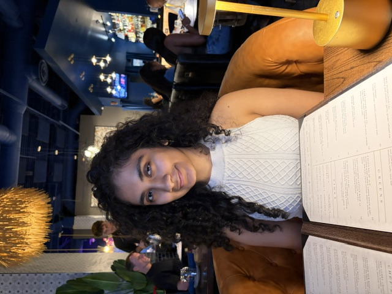

🎨 Design
- UI/UX Design
- Visual Design
- Figma
- Prototyping
- Wireframing
- Accessibility
Computational Media · Georgia Tech
A creative technologist working at the intersection of UI/UX design, code, and interactive media. I take ownership of real-world problems and turn them into clean, efficient solutions that actually help people — from healthcare triage tools to games.

01 — About
I'm a Computational Media student at the Georgia Institute of Technology, where I blend the technical and the creative — computing, design, and storytelling. I love the moment where research becomes something you can actually click, play, and feel.
My work spans UI/UX and visual design in Figma, front-end prototyping with HTML/CSS/JavaScript, and game development in GameMaker. I'm especially drawn to human-centered design: making complex systems calmer, clearer, and more accessible for real people.
What drives me is solving real-life problems. I take ownership of a challenge end-to-end — researching how things actually work, questioning inefficient processes, and delivering solutions that add genuine value. I care less about building something flashy and more about building something that works, is efficient, and truly helps the people using it.
I also embrace AI-assisted workflows — using tools like Kiro and Claude to move faster from idea to working prototype, while keeping the design decisions thoughtful and human.
02 — Skills
03 — Projects
Each project below is told the way I approach my work — the situation I started with, the tasks I owned, the actions I took, and the outcome I delivered.
A patient intake & triage-support prototype for emergency departments built on one principle: “Patients report → Technology organizes → Clinical staff decide.” It gathers structured information before clinical assessment and surfaces what may deserve prompt review — without ever diagnosing or ranking patients itself.
Emergency rooms lose precious time to repetitive information-gathering, and patients are unreliable at judging their own urgency — research shows roughly 65% overestimate and 8% underestimate how serious their condition is. The challenge: help staff get better information faster without letting software make medical decisions it isn't qualified to make.
Research how ER triage actually works, then design and build a functional, accessible web prototype that supports patient prioritization and organization — while keeping every final clinical decision firmly with qualified staff.
Studied triage protocols and cited clinical references (ESI high-risk vital-signs, NCBI thresholds) to ground the design. Using AI-assisted development with Kiro, translated that research into a single-page app with three views — Patient, Clinician, and a Case study. Designed an adaptive one-question-per-screen intake flow, a non-diagnostic flagging engine that explains why something is flagged, and a nurse dashboard that visually separates patient-reported from measured data. Baked in accessibility throughout: 56px touch targets, high contrast, plain language, keyboard navigation, ARIA live regions, and “color is never the only signal.”
Delivered a fully working, dependency-free prototype demonstrating a safe, human-centered triage-support model — flags surface urgent information with plain-language reasons, patients cannot self-assign priority, and no measurement is ever invented. The result is a polished portfolio piece that shows the full arc from research → design decisions → accessible, shippable build.
S New Georgia Tech students juggle required tasks, resources, and information scattered across countless platforms and emails.
T Collaborate with a team to design an onboarding portal that organizes everything incoming students need in one place.
A Helped shape the solution and user flow, and used AI tools including Claude to support brainstorming, development, and project planning under hackathon time pressure.
O Produced a working onboarding concept that centralizes fragmented information into a single, student-friendly experience.
S Wanted to build a complete, polished 2D platformer from the ground up — not just mechanics, but a cohesive world.
T Design and develop a bunny-protagonist platformer with interactive environments, collectibles, hazards, dialogue, and level transitions.
A Implemented core systems — movement, double-jump, collisions, slopes, moving platforms, damage/death states, and object interactions — and created custom tiles, animations, and UI.
O An evolving, playable platformer that demonstrates end-to-end game design, from gameplay systems to visual identity.
S A large collaborative GT game project needed a visual language that captures a tense, paranoia-themed atmosphere.
T Design visual elements and UI overlays that reinforce the game's mood and enhance the player experience.
A Created paranoia-themed UI overlays in Figma and collaborated with a team of 100+ members, iterating on feedback to refine the visual direction.
O Contributed cohesive, atmosphere-driven UI that strengthens the game's identity across a large cross-functional team.
04 — Experience
Georgia Tech
Georgia Tech
05 — Education & Honors
B.S. in Computational Media
High School Diploma
06 — Contact
I'm open to internships, design collaborations, and interesting problems. The fastest way to reach me is by email or LinkedIn.